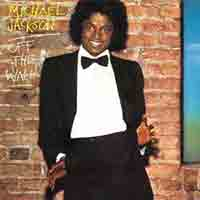

Photo of Michael Jackson performing in 1988. This image was originally posted to Flickr by Zoran Veselinovic here. It was reviewed on 28 May 2011 by the FlickreviewR robot and was confirmed to be licensed under the terms of the cc-by-sa-2.0.
He isn’t called the “King of Pop” for nothing. With a start as a member of the Jackson 5 with his family members Jackie, Jermaine, Tito, and Marlon in 1964, Michael Jackson’s career soon took off as his superior talent took him further than any artist had ever ventured. Jackson’s fierce falsetto and energized beats allowed him to sing anything from a somber ballad to a groovy pop tune sprinkled with the synthesized disco instrumentals of the era. After his solo debut in 1971, Jackson released record-breaking songs that can only be attributed to the combination of his smooth, high-pitched voice and the catchy rhythmic balance. Songs such as “Don’t Stop ‘til You Get Enough,” “Rock With You,” “Thriller,” and “Bad,” can be previewed below. Each of them showcases both Jackson’s natural talent and the artistry that was developed as his career progressed. The legacy left by Michael Jackson will be one that many will bust a move to for years to come. The King may be gone but with music like his we will be celebrating pop for an eternity with no excuse but to blame it on the boogie.
Don't Stop Til You Get Enough
Rock With You
Thriller
Bad
{kind=link}